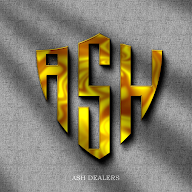
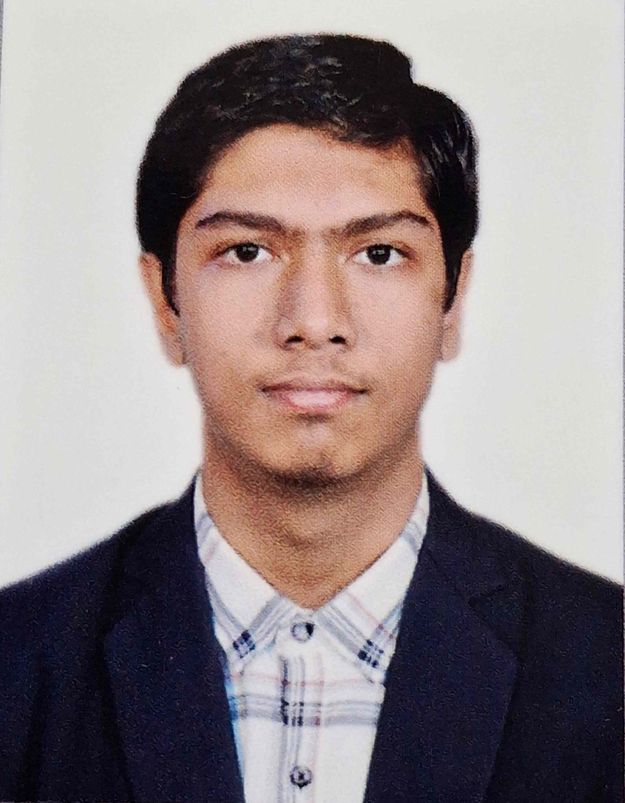
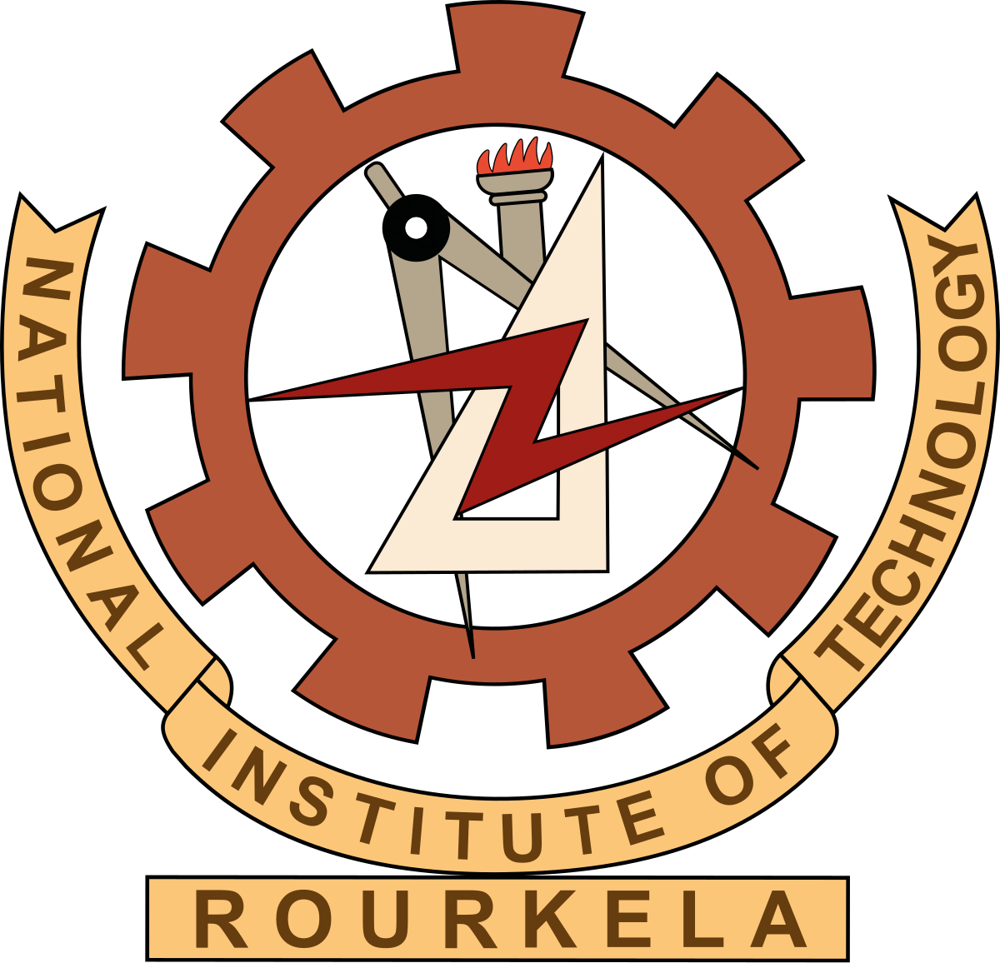
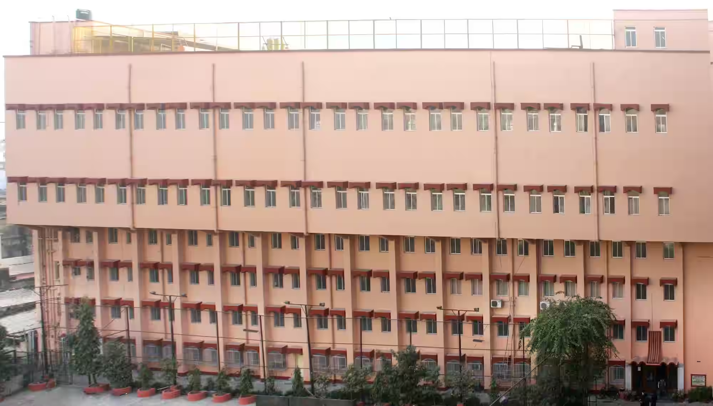
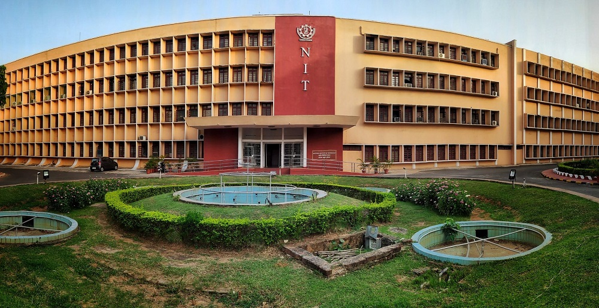
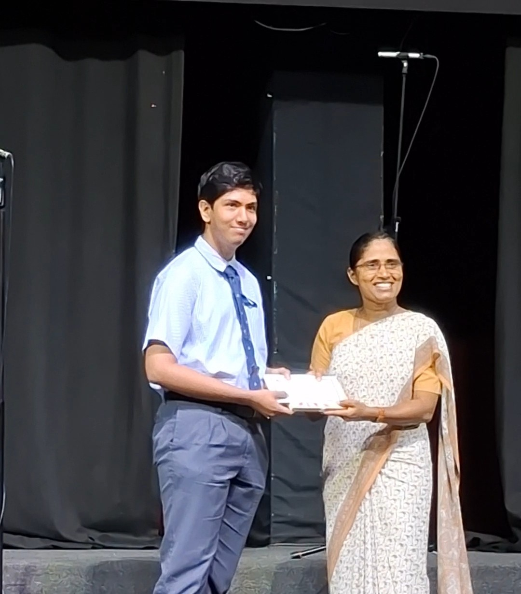
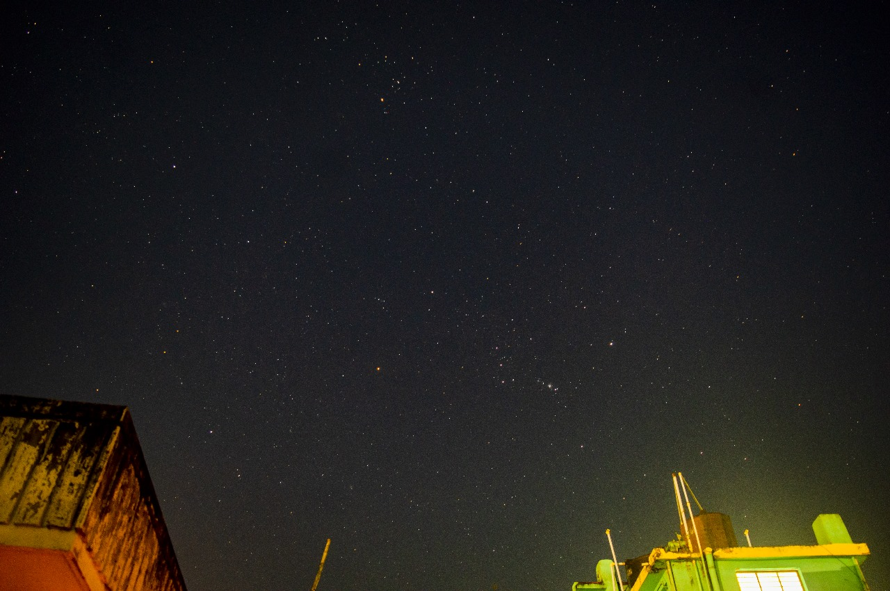
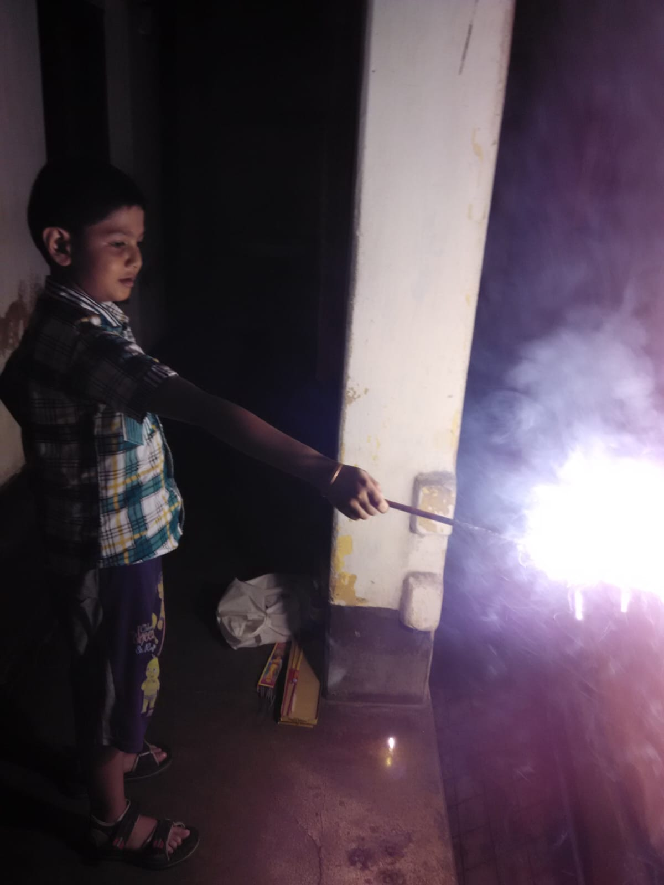
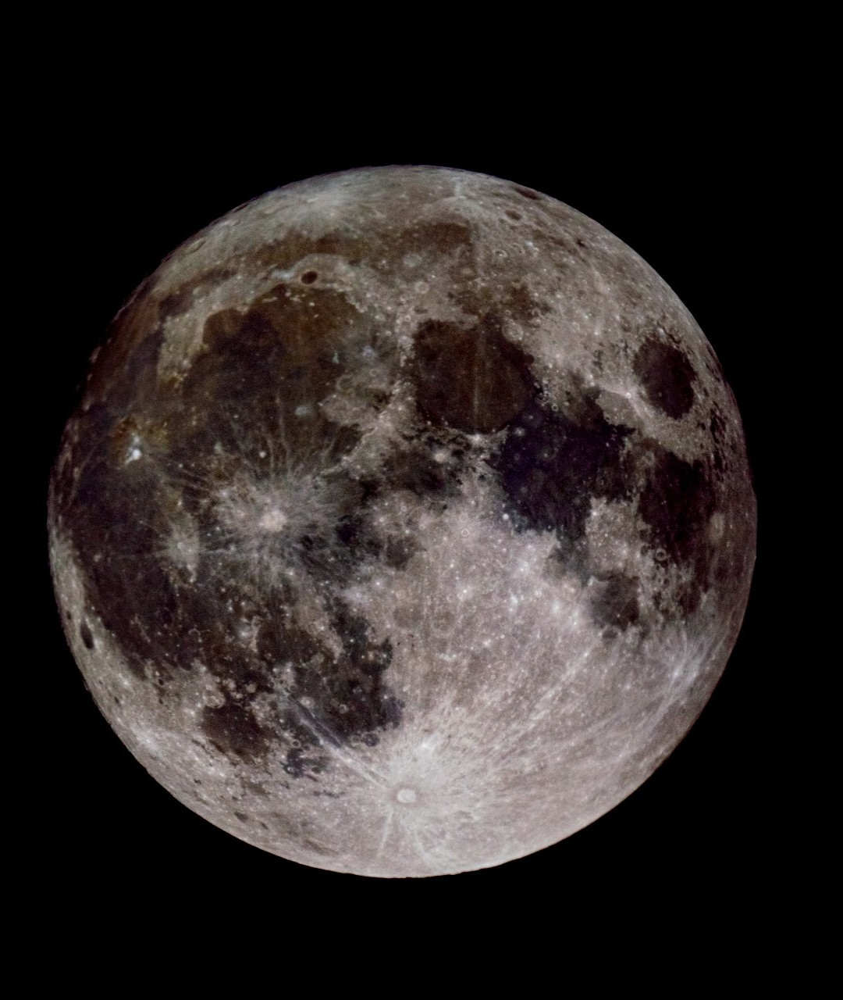

A budding engineer pursuing Bachelor’s in Electronics and Communication Engg. at NIT Rourkela, Subhodeep Ash expertises in a blend of technical knowledge as well as interpersonal skills. His technical expertise involves Java, C++, Data Structures, HTML, CSS, and JavaScript. Some of his people skills include problem solving and collaborating well in teams. He is seeking opportunities where he can utilize his existing knowledge for the betterment of the organization as well as learn new skills to enhance his potential and flourish himself professionally.
I am focussed on developing my programming skills and am actively seeking internship or entry-level opportunities to apply my knowledge in a practical setting.

2025-present
Expected Graduation: 2029
Bachelor of Technology in Electronics and Communication
Engineering
National Institute of Technology, Rourkela
Relevant Coursework: Data Structures and Algorithms, Digital Logic
Design, Microprocessors and Microcontrollers, Signals and Systems
2011-2025
The Assembly of God Church School, Park Street, Kolkata
ISC (Class 12) - 97.2%
Ranked #3 in school
ICSE (Class 10) - 93.4%
Poised to make his mark in the field of engineering, Subhodeep Ash, a first-year student in the Electronics and Communication Engineering (ECE) department at NIT Rourkela, brings with him a formidable record of academic and personal achievement. His road to one of India's premier technical institutes was paved with consistent excellency during his time at The Assembly of God Church School, Park Street, Kolkata, India. Subhodeep’s academic history is defined by a pattern of exceptional performance. He first set a high bar with an impressive 93.4% in the ICSE 2023 exams. He then outshined this achievement, securing a stellar 97.25% in the ISC 2025 exams. This performance was not just a personal record, it cemented his position as one of his institution's top scholars, earning him the distinguished #3 rank in his school. His intellectual drive was further demonstrated when he ventured into the highly competitive national olympiad arena. Subhodeep successfully qualified for both the Indian National Physics Olympiad (INPhO) and the Indian National Astronomy Olympiad (INAO). These achievements are significant, emphasizing a deep and nuanced understanding of fundamental sciences and problem solving skills, far beyond the standard curriculum-a critical asset for a budding engineer. This strong analytical foundation is complemented by a deep engagement with technology. Subhodeep fosters a keen interest in competitive coding and web development, fields that demand rigorous logic and creative problem-solving. He has independently cultivated a robust technical skill-tree that includes Java, C, and C++, alongside core web technologies like JavaScript, HTML, and CSS. Beyond his purely academic and technical pursuits, Subhodeep maintains a rich and well-rounded personal life. He plays violin at his leisure, an endeavor that requires both creative discipline and technical precision. This appreciation for complex composition extends to his musical tastes, which range from the intricate patterns of Baroque music to the energy of rock. Apart from his musical pursuits, Subhodeep cherishes reading stories and novels. The art of long-form narrative complements his interest in cinema as a powerful medium for storytelling. These interests provide a holistic balance to his scientific mind, giving him a broad and creative perspective. Now at NIT Rourkela, Subhodeep Ash is strategically positioned to leverage his proven discipline, his passion for technology, and his multi-faceted talents as he delves into the complexities of Electronics and Communication Engineering.
Born and raised in the vibrant city of Kolkata, India, Subhodeep's early childhood was marked by a blend of curiosity, creativity, and a thirst for knowledge. From a young age, he exhibited a keen interest in astronomy, stars, and electronics. He often dismantled household gadgets and his toys to explore their inner mechanisms. This inquisitive nature was nurtured by his supportive parents and family, who encouraged his explorations and provided him with ample resources to fuel his learning. His formative years were also enriched by a strong emphasis on education, with his parents instilling in him the values of discipline, perseverance, and the importance of academic excellence. Alongside his intellectual pursuits, Subhodeep developed a love for music, particularly the violin, which became a significant part of his life. The structured practice and dedication required to master the instrument taught him valuable lessons in patience and focus. Additionally, his early exposure to literature and storytelling fostered a vivid imagination and a deep appreciation for narratives. Subhodeep also had a deep passion for chess and astronomy, though the former was a hobby while the latter was more of a serious interest. Participation in various school activities and contests held at Birla Planeterium further deepened his fascination with the cosmos. Nonetheless, his childhood was not solely defined by academics and hobbies. He enjoyed a well-rounded upbringing, engaging in various outdoor activities such as playing football, cricket, swimming, flying kites, and spending time with friends and family; though none of these pursuits were particularly serious endeavors, and with time, most of them took a backseat to his academic and technical interests. These experiences collectively shaped Subhodeep's character, laying a solid foundation for his future endeavors in both academics and personal growth.
The school life at The Assembly of God Church School, Park Street, Kolkata, has not only been transformative, but also instrumental in shaping Subhodeep's character and aspirations. The institution's commitment to academic excellence provided a fertile ground for his intellectual growth. The rigorous ISC and ICSE curricula challenged him to push his boundaries, fostering a deep understanding of core subjects, whereas the morning assemblies and chapels instilled in him a sense of discipline, and fostered a deep spiritual connection. The morals and ethics gained during these sessions have been pivotal in shaping his worldview. Beyond academics, the school's vibrant extracurricular landscape offered Subhodeep numerous opportunities to explore his interests. Participation in various clubs and events honed his leadership and teamwork skills, while also allowing him to cultivate a well-rounded personality. It is during this time, that Subhodeep discovered his passion for violin, chess, programming, and leadership skills through various clubs and class prefecture. The constant competition and collaboration with peers nurtured a healthy competitive spirit, driving him to excel further and push his limits. The friendships forged during these formative years have been invaluable, providing a support system that has enriched his school experience. In essence, Subhodeep's journey at The Assembly of God Church School has been a blend of academic rigor, spiritual growth, and personal development, laying a strong foundation for his future endeavors.





